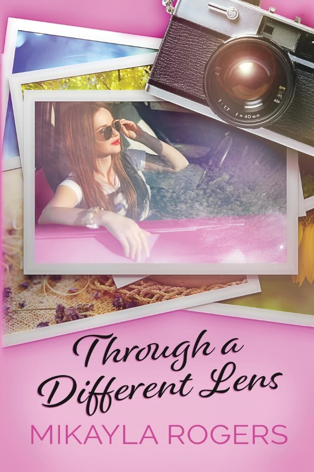

Through a Different Lens
Home is a small town.
Mature-age small town romance, dramedy and women's fiction. Set in Australia.
Daniela has always kicked life's bum despite the challenges it's pelted at her. When her beloved babcia is in a car accident, she heads back to the small town she was dragged up in, ready to fix everything.
Next door is Sean, her old love. Since his wife died he has been trying to wrangle his rebellious teenage daughter, and the last thing he needs is Daniela back.
Nothing is ever that simple, though.
Who is in the frame
Three people and one town.
Daniela. Sassy, and ready to fix everything.
Sean. Widowed, next door, raising a rebellious teenage daughter. Does he have the strength to fight for her?
Babcia. The reason Daniela comes home, after a car accident.
Only she could have this
22 November
Mikayla is signing at All Booked Out, at Brown Hill Community Hall in Ballarat, from 10am.
The last page
The book ends with a playlist.
The novel has a playlist in its endmatter, after the last chapter.
In her words
Mikayla Rogers
An indie author in Ballarat, Australia, writing mature-age small town romance with dramedy and women's fiction elements.
Is she really a success, or has she merely been surviving at surface level?
Read Daniela's answer